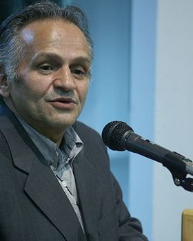
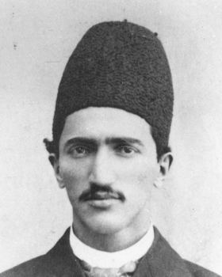
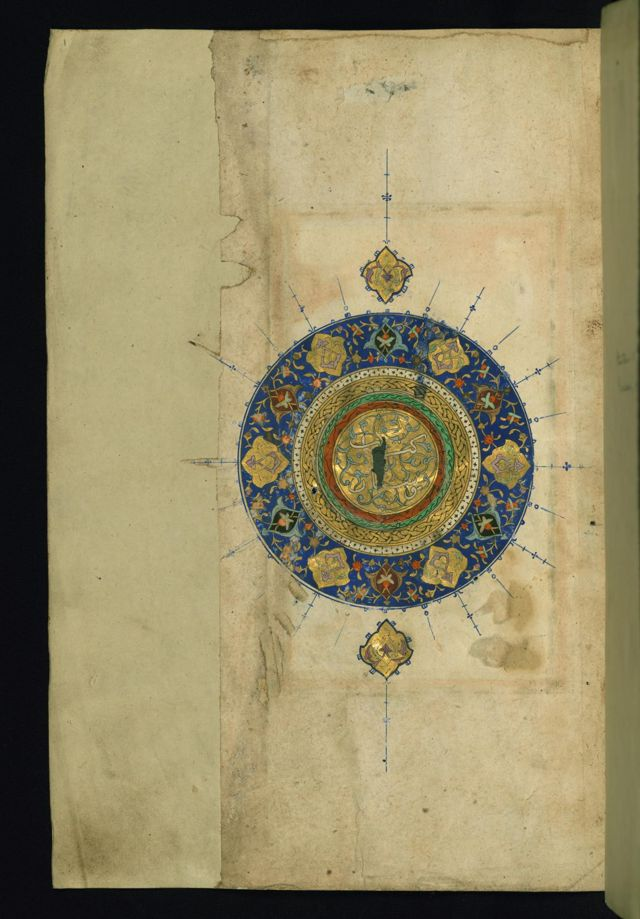
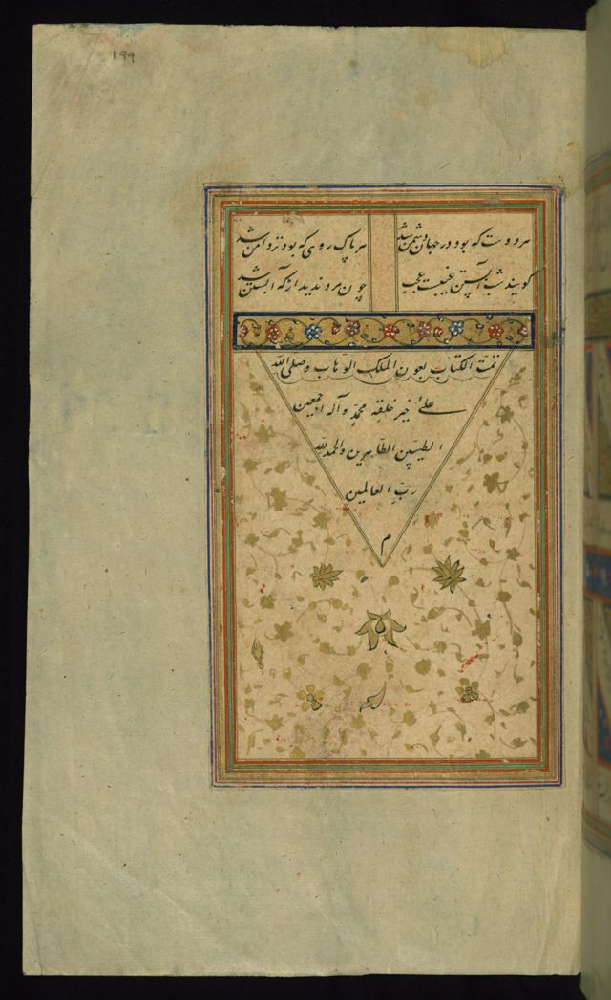
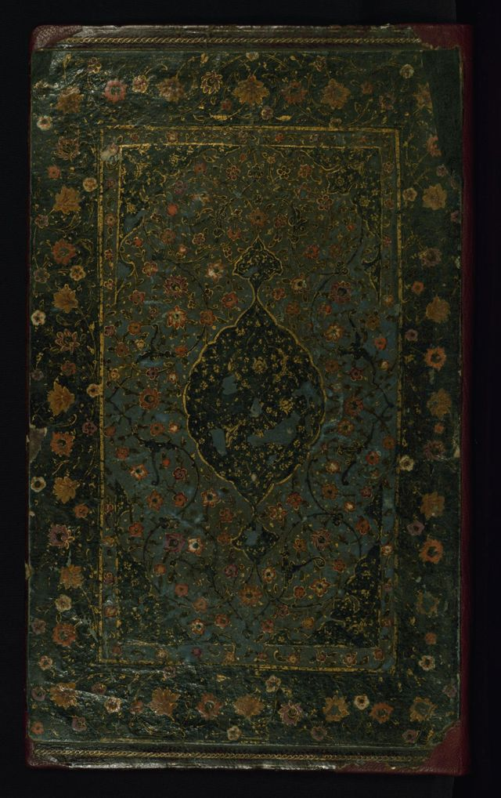
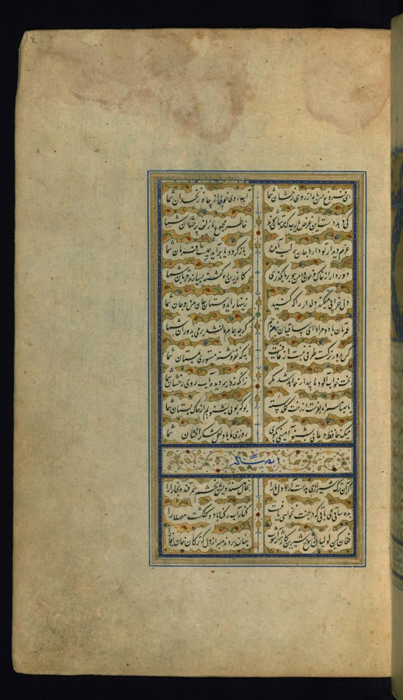
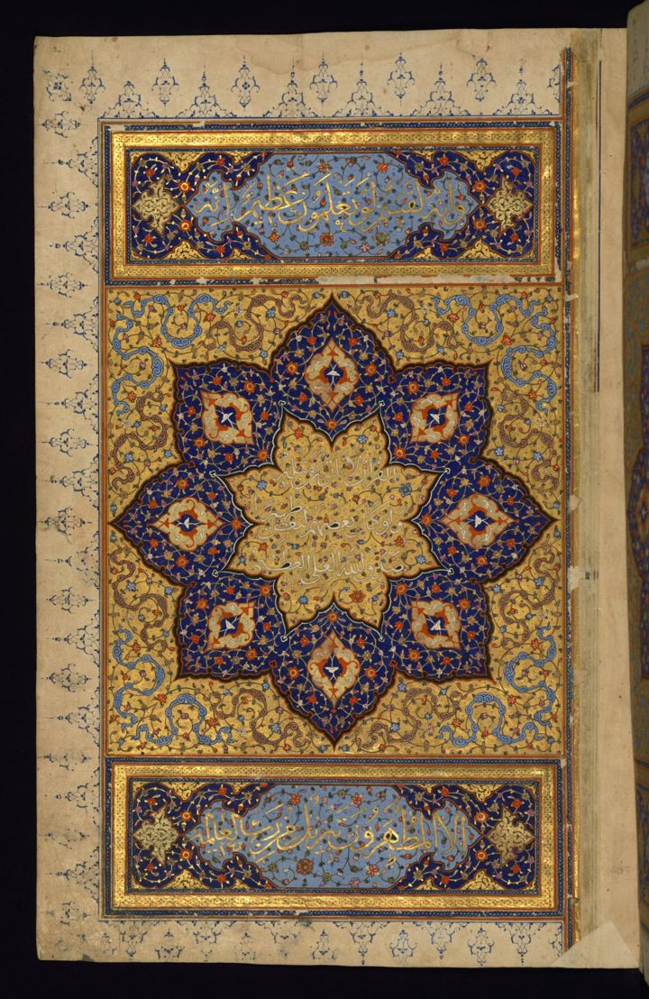
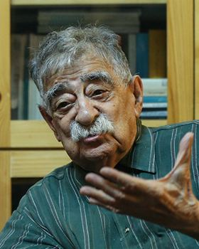
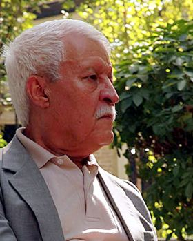
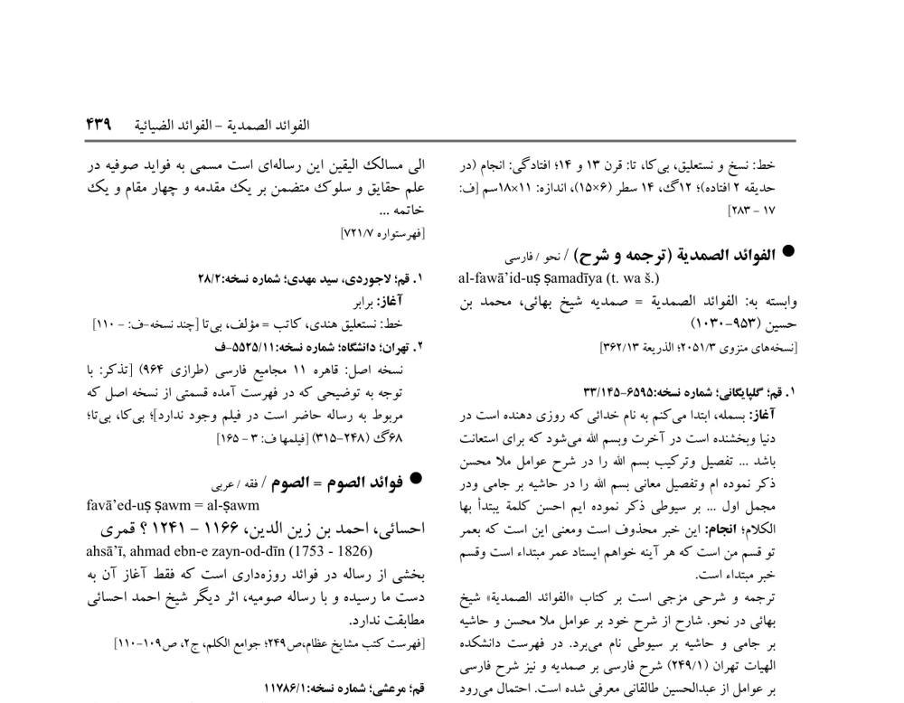

۱. شمسه انتخاب دور اول
ستارهی هشتپر لاجوردی با تذهیب طلایی. مرجع مقایسه است.
۳۲۱۶
شش نسخه از لوگوی شمسه، و سه نسخهی پرعکس از جهت «الف» برای صفحهی خانه، بهعلاوهی صفحهی اثر. عکس فهرستنگاران از خود سایت است، برگهی فنخا از اسکنهای پروژه، و تصویرهای نسخه از موزهی والترز (مالکیت عمومی، از ویکیمدیا). بالای هر ماکت دکمهی روشن/تیره و دسکتاپ/موبایل هست.
هر نسخه روی کاغذ و روی زمینهی تیره، و در اندازهی favicon. نسخهی ۳ و ۵ مستقیم از دو نسخهی خطی گرفته شدهاند که عکسشان در ماکتها آمده است.
ستارهی هشتپر لاجوردی با تذهیب طلایی. مرجع مقایسه است.
همان ستاره، فقط با خط مرکب و مرکز شنگرفی. با کاغذ جهت «الف» یکی میشود و در چاپ تکرنگ هم کار میکند. در اندازهی کوچک کمرنگ است.
هشت لَتِ نوکتیز لاجوردی گرد یک گل طلایی، از سرلوح نسخهی W.569 که در بنر «برگ زرین» آمده است. نرمتر و ایرانیتر از ستارهی ساده است و در ۱۶ پیکسل هم شناخته میشود.
دو مربع درهم، پایهی هندسی همهی شمسهها، با نقطهی لوزی شنگرفی در مرکز. سادهترین و امروزیترین نسخه است.
قرص لاجوردی با پرتوهای طلایی و دو سرترنج بالا و پایین، از برگ آغاز کلیات سعدی (W.620). برای سربرگ و تصویر Open Graph زیباست، ولی پرتوها در favicon دیده نمیشوند.
ستارهی دوازدهپر با گل طلایی، شبیه گرههای کاشی. پرکارتر از هشتپر است و حس معماری بیشتری دارد تا کتاب.
سه خط برای نوشتن «فهارس» کنار شمسهی هشتلَت: نسخ (همخوان با عنوانهای جهت «الف»)، نستعلیق، و امیری.
بنر تمامعرض با شمسهی سرلوح یک نسخهی صفوی، و جستجو روی برگی جدولکشیشده که روی عکس مینشیند. زیر آن سه تصویر از «گنجینهها»، ردیف فهرستنگاران در قاب محرابی، و نمایهی موضوعها.
جستجو در یک سو و در سوی دیگر دو برگ نسخه روی هم، مثل کتابی که روی میز باز شده. پایینتر بخش «پاسداران فهرست» با چهرهی مصطفی درایتی و هشت فهرستنگار، و «برگی از فنخا» که نشان میدهد هر مدخل به برگهی چاپیاش پیوند دارد.
نسخهی تیرهی «الف»: سرلوح در تاریکی، با جستجوی روشن در میانه. «نسخهی برگزیده» یک ترقیمه را نشان میدهد و اصطلاح را برای خوانندهی تازهکار توضیح میدهد. پیشفرض این ماکت تیره است، ولی حالت روشن هم دارد.
برش واقعی برگهی فنخا (ج ۲۴، ص ۴۳۹) در ستون کنار میآید. تصویر نسخه فقط وقتی نشان داده میشود که کتابخانه تصویر دیجیتال داشته باشد. جای خالیاش اینجا با خطچین مشخص شده است.
عکسها از سه منبع میآیند: آنچه پروژه همین حالا دارد، مجموعههای آزاد (مالکیت عمومی یا Creative Commons)، و مخزن دیجیتال کتابخانههای ایران که برایش اجازه لازم است. زیر هر عکس نام منبع و پروانه نوشته میشود.
| جا | عکس | منبع | وضعیت |
|---|---|---|---|
| بنر صفحهی خانه | سرلوح، شمسه، ترقیمه، جلد؛ مجموعهای ۱۰ تا ۲۰ تصویری که به نوبت عوض میشود | موزهی والترز، کتابخانهی کنگره، کتابخانهی بریتانیا (مالکیت عمومی، از ویکیمدیا) | شش تصویر گرفته شد |
| فهرستنگاران (خانه و صفحهی هر فهرستنگار) | چهرهها، با یک تیمار رنگ یکسان | عکسهای موجود سایت (۴۱ عکس) | موجود |
| صفحهی اثر و خانه («برگی از فنخا») | برش برگهی چاپی هر مدخل | اسکنهای ۳۴ مجلد فنخا در پروژه | موجود |
| کارت کتابخانهها | عکس بنای کتابخانه یا تالار مخزن | ویکیمدیا (اغلب CC BY-SA، با ذکر نام عکاس) یا خود کتابخانه | باید تهیه شود |
| صفحهی نسخه | تصویر برگ نخست همان نسخه | مخزن دیجیتال مجلس، ملی، آستان قدس و دیگران | نیاز به اجازه |
| ردههای موضوعی | جزئی از تذهیب یا نگاره برای سر هر رده | همان مجموعههای آزاد | باید تهیه شود |
| تصویر Open Graph | شمسهی انتخابی روی برش سرلوح، با عنوان صفحه | ساخته از همین عکسها | پس از انتخاب لوگو |


بر پایهی ۳۴ مجلد فنخا. هر مدخل به برگهی چاپی خودش در فهرست ارجاع دارد.



بر پایهی ۳۴ مجلد فنخا. هر مدخل به برگهی چاپی خودش در فهرست ارجاع دارد.


فنخا در ۳۴ مجلد، فهرست یکپارچهی نسخههای خطی ایران است و پایهی همهی دادههای فهارس.مصطفی درایتی، گردآورندهی فنخا


هر مدخل، پیوند به برگهی چاپی خودش
«الفوائد الضيائية» جامی در جلد ۲۴ فنخا از صفحهی ۴۳۹ آغاز میشود و ۸۵۳ نسخه دارد. در فهارس همان برگه یک کلیک فاصله دارد، تا هر داده با مأخذش سنجیده شود.

بر پایهی ۳۴ مجلد فنخا. هر مدخل به برگهی چاپی خودش در فهرست ارجاع دارد.
ترقیمه یادداشت پایان نسخه است که کاتب در آن نام خود، تاریخ و گاه جای کتابت را مینویسد. بیشتر تاریخهای کتابت در فهارس از همین یادداشت آمدهاند.
تصویر: انجامه و ترقیمهی دیوان حافظ، با سرانجام مذهّب. موزهی والترز W.634، مالکیت عمومی.
از جامی، عبدالرحمن بن احمد (۸۱۷–۸۹۸ ق)
| کتابخانه | شماره | کاتب | تاریخ کتابت | خط | برگ |
|---|---|---|---|---|---|
| مجلستهران | ۶۷۴ | ناشناخته | ۸۹۷ ق | نستعلیق | ۳۱۴ |
| وزیرییزد | ۱۵۸۵ | مؤمن بن حاج محمد استرابادی | ۱۷ شوال ۸۹۷ ق | نسخ | ۲۷۶ |
| ملیتهران | ۳۴۹۳ | ناشناخته | ۸۹۷ ق | نسخ | ۲۳۹ |
| خادم حسینیتبریز | ۲۱ | عبدالله بن اسماعیل | ۸۹۸ ق | نسخ | ۱۲۱ |